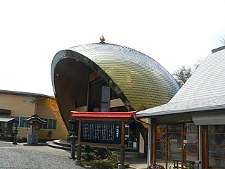
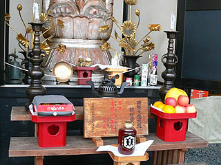
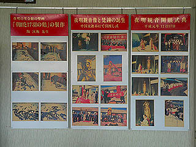
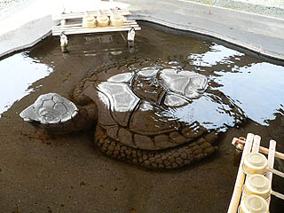

夜明観音/大分県日田市
大分県日田市。全国的には「日田の天領水」でその名を御存じの方も多いかと思う。
そんな天領日田の西にスッポンとハチミツをブレンドした健康食品を販売する会社がある。
その名はカメミツ。これ以上分かりやすくしようがないネーミングだ。
あ、正確にはスッポミツでは・・・ま、いいですけど。
日頃から健康にだけは自信のある私、健康食品のお世話になる必要は全くないのだが、ナゾの大観音があるという情報を仕入れてやって来た次第。
とはいえ超健康食品を食べて血液をサラサラにする事もやぶさかではないので、とりあえず食堂へ行ってみると食事の準備がまだ出来てないとの事だった。
まあ、それなら致し方あるまい。魂の血糖値を上昇させるべく、本来の目的の観音サマに会いにいこうではないか。
売店や食堂や工場などが並ぶ本社の社屋と同じ敷地内に小高い丘がある。
そこに大観音がいるという。
朱塗りのゲートには「夜明観音」とある。夜明とはここの地名で、社屋を含めたここの敷地全体を「夜明の里」と謳っている。よって夜明観音。
丘の頂上に至る道には途中途中石像が配されている。
あ、カメに乗ってますね。
左；水天 右；妙見菩薩
てなわけで丘の頂上に到着。
ゔぉっ！
何じゃこりゃ！

何とこの金ぴかのドームが夜明観音サマのお住いなんです。
まるで昔の合体もののアニメのロボット格納庫みたい。
ドームの一番上がキュルキュルキュル〜っと開いて観音サマがそのまま轟音をあげて飛び立って行きそうな感じだ。
ドームの中におわす夜明観音は高さ4.75メートル。
リアルサイズよりも大きく見えるのは・・・観音サマの威徳がビッグだ、ということで。
それにしても何なんでしょうこのセンス。
巷では無理矢理現代建築っぽい堂宇をつくる嫌味なお寺とかあるけど、そういう類いとはまた違う独特の空間。
シンプルな形態を目指したのに金色とかバンバン使い過ぎて結果ややこしくなってしまった自家撞着っぷりが実に味わい深い。
観音像の周辺には様々な信仰グッズが。
そしてもちろん観音サマのお供え物はカメミツ！！

ドームの内壁沿いには奉納されたミニチュア夜明観音がズラズラ〜っと。
さらに2階にもズラズラ〜っと。
この辺もどこか7〜80年代のSF映画の宇宙船を何とな〜く連想させる。
金ドームのとなりには博物館だったか美術館だったかという建物があり、中に入ってみると中国物産展で売られているっぽい感じの置き物が並んでました。
で、その一画にあった夜明観音の開眼式や引渡し式の写真。

これによると夜明観音の開眼は平成元年。会社の創立10周年を記念して作られたそうな。
製作は中国の大連。
何となく中国で大仏や大観音を造るというと華南の方をイメージしがちなので少し意外な気もした。
実際、北部、東北部に大観音を発注する例は少ないのではなかろうか。
夜明観音の説明がなされた石碑を見ると大連と日本の友好、友情の絆で生まれた云々、と書かれているので、かの地に特別な思いがあるのだろう。
写真を見ると完成時は金ピカの観音像だったようだが現在は下地の茶色が若干見えて来ちゃっている。
そろそろ塗り替えの時期でしょうか。

来た時には気付かなかったが手水の中にもカメがっ！
まあ、スッポン供養という意味もあるのかもしれないっすね。
参拝を終えて土産屋（カメミツの、じゃなくて夜明観音の方のです）を覗くと意外と充実の品揃え。
他ではあまり見られない弘法大師キーホルダーや三鈷杵型タイピンなど普段の生活に潤いと安らぎと笑いを提供するグッズをついつい購入。
買ったはいいけど・・・三鈷杵型タイピン、いつ使ったら良いんだろう・・・
ところで・・・
土産屋に置いてあったパンフを見てビックリ！
ここは福岡にある千如寺の別院だったのだ！
千如寺といえば通称雷山観音。4.6メートル余の九州最大の千手観音で有名な名刹だ。
ああ、それで大きさも雷山観音に合わせたんですか・・・
突然下の方からゆるい音楽が鳴り響く。
「ハイ、○○様御一行〜、いらっしゃいました〜」の声に振り向けば、眼下のカメミツ直売店前にバスが入って来た。
ああ、みんな健康に感心大アリな感じの方ばかり、健康食品も良いけど観音サマもよろしくね。
結局、時間がなくなってしまったので、カメミツの効果は試さず仕舞いだったが、夜明観音の、というかレアな仏グッズのおかげで常日頃からドロドロな私の心は幾分サラサラになった・・・ような気がします。
こんなにスぺーシ−で御機嫌な観音さんがあまり多くの人の目に触れず棲息しているとは、日本って深いですね。いやホントに。
カメミツのサイトはこちら。ガッツさんも愛用だとか。
情報提供は福岡在住の東さんです
2006.4.
珍寺大道場 HOME